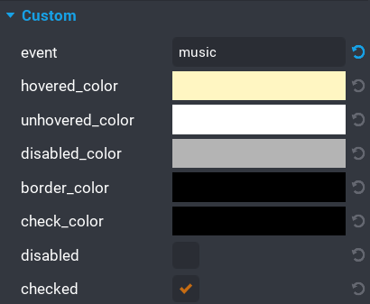

Events
The UI Toggle component has a simple event system using broadcasts.
If you have set the event property then your event call will be made up with the name of your event you picked.
Any custom event should be unique for each toggle.
So for example if you have a toggle for turning music on and off and you set the event property to music, then your event will be like so.
1 2 3 | |

Otherwise if you don't set an event, then they will be called using toggle instead.
1 2 3 | |
Here are a list of the events are what they do.
| Default Event Name | Return Type | Description |
|---|---|---|
on_toggle_toggled |
Event<boolean> | Fires when an the toggle has been toggled. A boolean is returned which is the state of the toggle. |
| Default Event Name | Parameters | Description |
|---|---|---|
on_toggle_enable |
None | The component listens for this event and enables the toggle. |
on_toggle_disable |
boolean | The component listens for this event and disables the toggle. You can pass in a boolean value if you want the checkmark to be cleared. Default is false. |